Unit Fractions, Fractions <>1, mixed numbers
If this triangle is ¼ of my shape, what might my shape look like? Is there more than one solution? Why or why not.
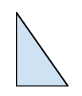If this square is ⅛ of my shape, what might my shape look like? Explain your thinking.
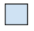Edie ate 4 cookies from the plate of cookies her mom left out. How many cookies were on the plate if Edie ate ⅔ of the cookies?
How much more pie does the monster need to be able to eat 3 whole pies? Explain your thinking.
About how much of the ‘one whole’ will it take to fill the gap, so that JiJi can cross? Show your thinking.
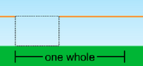One full box of peeps has 3 peeps. My brother and I ate 20 peeps. How many boxes of peeps did we eat? Show your thinking.
How many wheel sections will you need to get JiJi into the balloon basket? How would you name that point on the road?
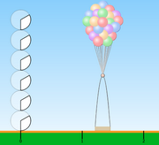Will JiJi make it to the basket? Justify your reasoning.
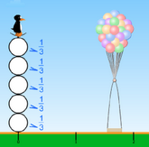If the large square = 1whole, then the small rectangle = ___.
If two large squares = 1 whole, then small rectangle = ___.
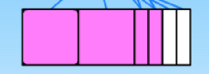Create a puzzle like the one above except that all the squares would be correct solutions. Choose two of them and prove why. (explain what is meant by ‘equal parts.’)
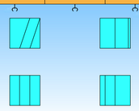The large rectangle is 1 whole. Label the fractional value of each of the other shapes within the whole. Choose three of the fractional spaces and explain how you figured out the value.
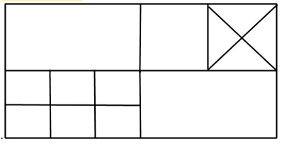What are the other ways to fill the gap? Label the unit fraction for each bar and the fractional section needed to fill the gap.
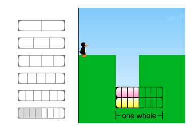What other ways are there to fill the gaps in JiJi’s path? Explain.
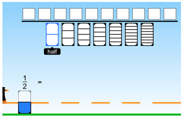Fred’s class created flags for International Day. Choose two flags and describe what fraction of each flag is green. Name the fraction in as many ways as you can.
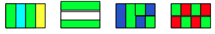